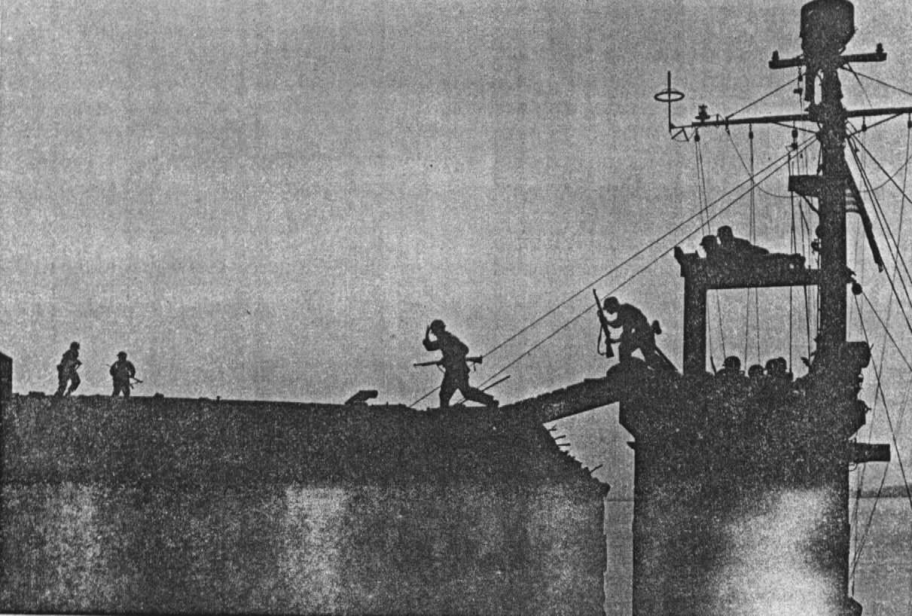
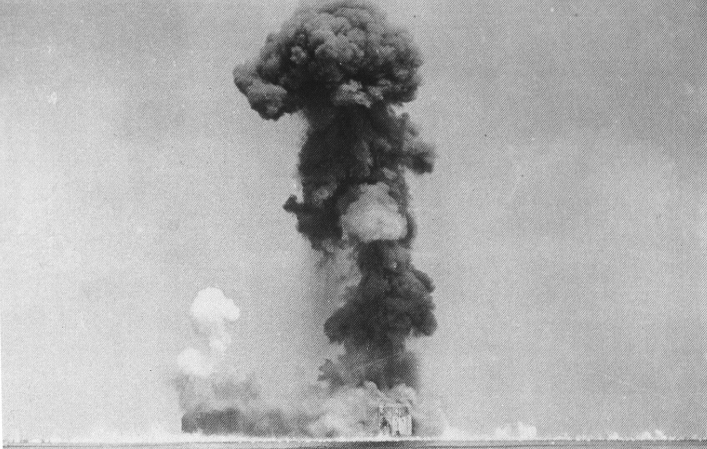

PICTURES OF RAID
LSM 51 Approaching Fort Drum. Note LCM pushing bow into side of the Fort.

Soldiers dashing aboard Fort Drum.

TNT finally explodes sending huge column of smoke into air
Return to Ft. Drum Story
Return to Homepage